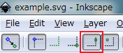

更新履歴
v0.1.0
ZIPを入手- 改善: Inkscape v1.0.0に対応
インストール手順をご覧ください。
v0.0.6
ZIPを入手- 新規: スラスター ← 始点マーカー付きのline要素 (pathではなくline限定)
- 改善: pathのベジエ曲線などをポリゴンに変換する際、ノードが無駄に多くなる場合は削除するようにしました。
- 修正: pathのパーサに不具合があったのを修正しました(ポリゴンが正しく変換されないことがありました.)
v0.0.5
ZIPを入手- 変更: xml.dom.minidom から xml.etree.ElementTreeに戻しました。
- 修正: python2.3でも動作するように、sortedを使わないようにしました(しかし、xml.etree.ElementTreeはpython2.3では標準ではない)。
- 修正: 2つの図形に接続されるアタッチメント（バネ、ヒンジ）が正常に接続されない不具合の修正。
（下記のブログで報告された不具合に関する修正です。ありがとうございます）
http://nishina2525.cocolog-nifty.com/blog/2012/04/phn-3a3b.html
v0.0.4
ZIPを入手- 新規: 交差しない複合パスに対応しました.
- 変更: xml.etree.ElementTree の代わりにxml.dom.minidomを使用するようにしました。
動作確認済みのPythonに下記を追加:
* Python 2.4.4
(#71, Oct 18 2006, 08:34:43) [MSC v.1310 32 bit (Intel)] on win32 - 修正: アタッチメント(バネやヒンジなど)の接続判定や穴あきの図形の判定が誤る可能性のあったバグを修正しました.
- 改善: 全般的にリファクタリングを行いました (継続的に開発を行なうため).
- 変更: example.svgを少し手直ししました. 気になる場合は下記を御覧ください.
・平面の位置を変更
・緑色の平面の不透明度を最大に
・グリッドを表示
・「境界枠のエッジの中間点から中間点にスナップ(下図参照)」をオンに(こうすることで、グリッドを非表示でもある程度スナップします)

・ヒンジのマーカーの位置を変更 (中心でスナップしやすいように)
v0.0.3
ZIPを入手- 新規: モーター ← marker-start要素を持つ真円
- 改善: 自己交差したパスで記述されたpathに対応しました.
(複合パスで記述された図形には未対応です.) - 改善: polygon要素をポリゴンに変換するようにしました.
(前のバージョンまでは, path要素のみポリゴンに変換していました.) - 改善: path要素で作成した線分(2点のみのpath)をバネに変換するようにしました.
(前のバージョンまでは, line要素のみバネに変換していました. - 変更: phnファイル内にSVGデータをコメントアウトした状態で出力するようにしました.
万が一変換前のSVGファイルを紛失しても、phnファイル内からその情報を得ることができます.
(phn_output.py内に記述した ORIGINAL_SVG_DATA_OUTPUT の値を False にすると出力しません.) - 変更: 平面の色を, ストロークプロパティ(stroke)ではなくフィルプロパティ(fill)で設定するようにしました.
基本的にはstrokeの値には依存しません.
例外として, fillがnoneの場合は, strokeで指定された色の境界線を持つ平面が作成されます.
example.svg 及び example.phn を御覧ください. - 改善: 楕円弧を、指定した角度(デフォルトで3度)毎に頂点を持つ線分の集まりに変換するようにしました.
これにより、多くの場合に以前より滑らかに変換されます.
角度はphn_output.py内の ARC_NODES_FREQUENCY で変更できます. - 改善: Python3.0でも動作するようにしました (Python 3.0.1で動作確認済み).
動作確認済みのPython:
* Python 2.5.4
(r254:67916, Dec 23 2008, 15:10:54)[MSC v.1310 32 bit (Intel)] on win32
テストのassertAlmostEquals()がlistに非対応のためにTypeErrorが発生しますが、本体は動作します.
* Python 2.6.5
(r265:79096, Mar 19 2010, 21:48:26) [MSC v.1500 32 bit (Intel)] on win32
本プロジェクトは主に Python 2.6.5で動作確認しています.
(現時点のInkscapeの最新版(0.48)に同梱されているのがこのバージョンの為)
* Python 3.0.1
(r301:69561, Feb 13 2009, 20:04:18) [MSC v.1500 32 bit (Intel)] on win32 - 修正: 小さなバグ(主に例外処理)を幾つか修正しました.
以前のバージョンでは変換に失敗していた可能性があります. - 変更: example.svg の内容を変更しました.
v0.0.2b
ZIPを入手- 変更: 平面の境界線をオフにしました (drawBorderをfalseにしました).
- 修正: 楕円が変換できないバグを修正しました.
v0.0.2a
ZIPを入手- 修正: 穴あき図形の重心位置が誤っていたので修正しました.
v0.0.2
ZIPを入手- 新規: バネ ← line要素 (path要素ではなくline要素限定なので注意)
- 新規: ヒンジ ← 中点マーカー付きの真円形 (マーカーの種類は関係なし)
- 新規: レーザー ← 終点マーカー付きのline要素 (pathではなくline限定)
- 改善: 出力する座標の削減.
直線部で、SVGデータとして点が存在しない場合は点を出力しないようにしました.
直線上の点は、Phun/Algodooが自動で補完します. - 改善: example.svg を少しシンプルに変更.
- 改善: example.svg の要素のidをわかり易い名前に変更(idの値は変換結果に影響しません).
- 改善: ソースコードの全般的なリファクタリング (継続的に開発を行なうため).
- 改善: Inkscapeに同梱されたソースコードからの独立.
依存しなくなったので、Inkscapeをダウンロードしなくても利用できます.
※要Python.
Python 2.6.5で動作確認しています.
Python 2.5で内蔵されるようになったetreeモジュールを使用しています.
Python 3系では動きません。
コマンドラインから利用する場合のコマンド例:
python26 input.svg > output.phn - 改善: 警告の表示を少し変更. スクリプトの行番号を表示します.
- 修正: 平面の色を修正 (v0.01で常に黒色になっていたので).
v0.01
ZIPを入手- ポリゴン ← path要素, 変形したrect/circle/ellipse要素.
- ボックス ← rect要素 (角が丸かったり、transformにより平行四辺形になっている場合はpath.
- サークル ← circle/ellipse/path要素で作成した真円形.
※ Inkscape以外で作成したpathによる円に非対応.
※ rect要素の角が丸いものは(仮に真円でも)サークルではなくポリゴンに変換. - 平面 ← polyline要素 (最後の2点で位置と傾きを指定).
- トレーサー ← styleにfilter属性付きの真円形.
※ フィルターが付いている以外の条件はサークルと同じ)